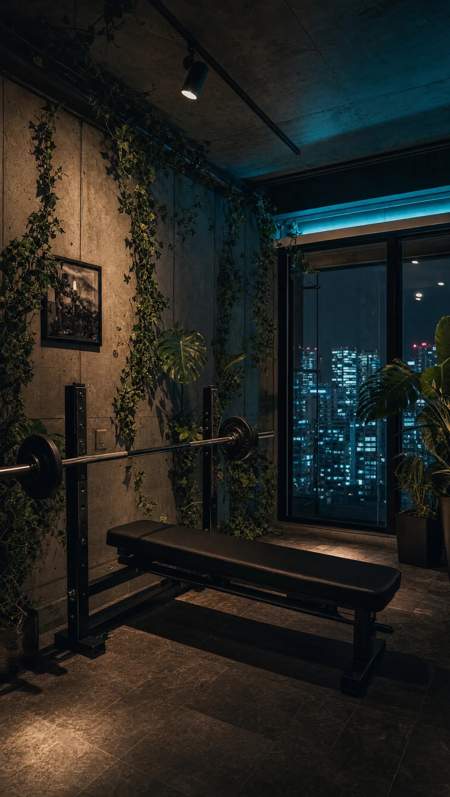
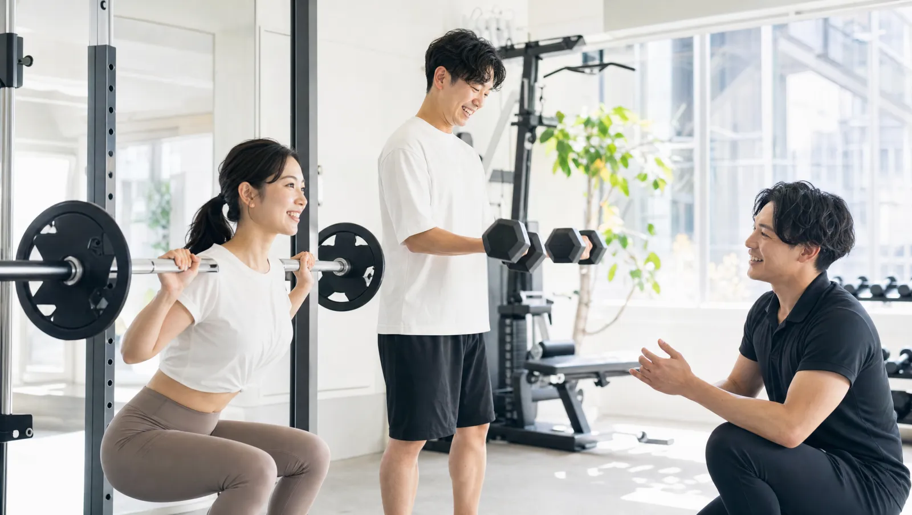
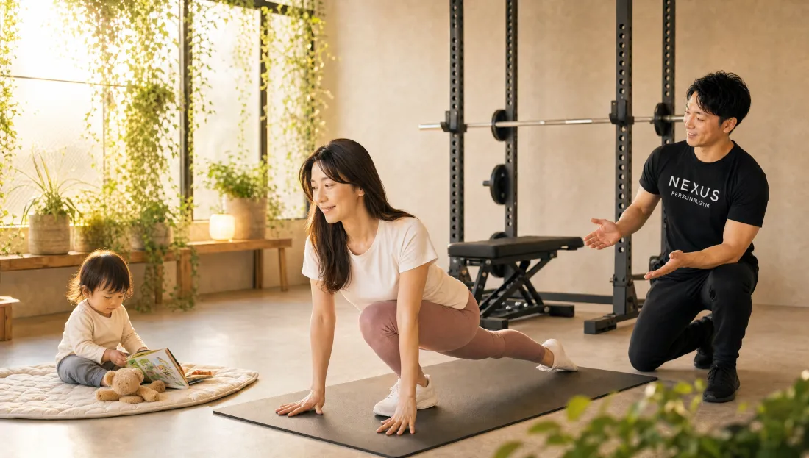
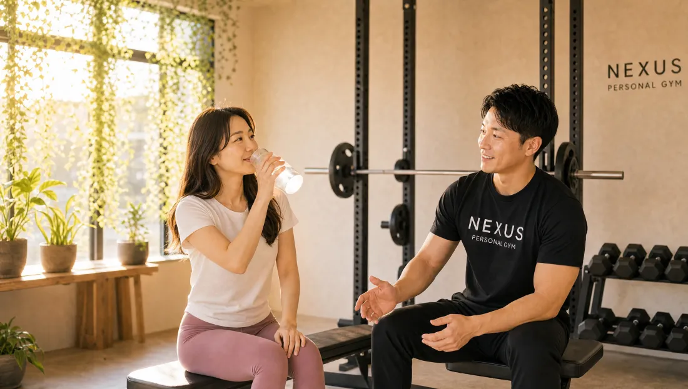

NEXUS Personal Gym ／ 東京都港区
NEXUSパーソナルジム 乃木坂・赤坂店｜乃木坂・赤坂の完全個室・隠れ家ジム
東京メトロ千代田線・乃木坂駅・赤坂駅が最寄り。港区の住宅街のマンションの一室にある、大きな看板のない隠れ家パーソナルジムです。女性会員85%、運動初心者の30〜40代女性がこっそり通っています。
- ブライダル対応
- 完全個室
- 手ぶら通いOK
- 女性会員85%
- 運動初心者歓迎
- AI食事指導
この店舗の特徴
NEXUS乃木坂・赤坂店は、東京都港区の落ち着いた住宅街に佇む完全個室のパーソナルジム。大きな看板を出していないため、乃木坂・赤坂・港区・六本木エリアで「人目を気にせず綺麗になりたい」という30〜40代女性に選ばれています。エリアには国立新美術館、東京ミッドタウン、赤坂サカスなどがあり、ウェア・タオル・プロテインまで無料提供の手ぶら通いOKで、忙しい毎日でもバッグひとつで続けられます。


最初は緊張していましたが、トレーナーが話をよく聞いてくれて心地よい距離感でした。清潔で落ち着いた雰囲気の完全個室なので、女性でも通いやすいと感じています。
結婚式前のボディメイクを、乃木坂・赤坂で

「ドレスの試着で二の腕が気になった」「背中の開いたデザインを、体型を理由に諦めたくない」——挙式という動かせない期日があるからこそ、ボディメイクは最後までやり切れます。乃木坂・赤坂店では、まず挙式日とドレスのデザインをうかがい、背中・二の腕・デコルテ・ウエストという、ドレスでもっとも視線が集まる部位から優先順位をつけていきます。完全個室のマンツーマンだから、人目を気にせず自分の身体とだけ向き合えます。

残された日数によって、やるべきことは変わります。乃木坂・赤坂店では挙式日から逆算した90日プラン・60日プランを用意し、「いつまでに、どの部位を、どこまで」を最初に設計します。極端な食事制限で当日フラフラ……ということがないよう、その日のコンディションから逆算する無理のない指導で、式当日にピークを合わせます。会員の約85%が女性で、ブライダルのご相談は日常的。体に不必要に触れないノータッチ指導を基本にしているので、はじめての方も安心です。

週を追うごとに、ドレスの試着で鏡に映る自分が変わっていきます。背中がすっと伸び、二の腕のたるみが引き締まり、デコルテに華やかさが出る。「このデザインで大丈夫かな」から「このドレスを選んでよかった」へ——目標が数字ではなく“当日の自分の姿”だからこそ、モチベーションが途切れません。乃木坂・赤坂エリアで挙式を予定されている方は、エリア内の式場への下見や打ち合わせの動線に、そのままトレーニングを組み込めます。

迎えた挙式当日。積み重ねた90日・60日は、鏡の前の安心感になって返ってきます。姿勢よく背筋を伸ばして立ち、写真のどの角度でも堂々といられる——それは、頑張ってきた自分だけが手にできる自信です。乃木坂・赤坂店は、その一日のために全力で伴走します。

挙式は、新しい生活のスタートでもあります。せっかく作り上げた身体を、そのまま新生活の習慣に。乃木坂・赤坂店は毎日8:00〜23:00営業・月4回18,000円（1回4,500円〜）から続けられるので、挙式後の体型維持から、将来の産後の体型戻しまで長く伴走できます。全国約70店舗のネットワークがあるため、引っ越しや里帰りの際も最寄り店舗へ。「一生に一度」のために始めた習慣が、その後の人生を支える土台になります。
挙式まで残り80日で駆け込みました。背中の開いたドレスに合わせて、二の腕と背中を中心にプランを組んでもらい、当日は自信を持って写真に写れました。式後もそのまま通っています。
上記はサービス内容をわかりやすく伝えるためのモデルケース（イメージ）であり、実在するお客様の口コミではありません。Google口コミは本ページ内の該当セクションに実際の内容を要約して掲載しています。
挙式日からの逆算タイムライン｜ブライダル専用ページを見る料金プラン
入会金は通常55,000円、無料体験当日入会で15,000円（税込）に割引。全店舗共通の料金です。

夫婦で無料体験に参加して、そのまま入会しました。トレーナーが丁寧で話しやすく、信頼関係ができたので、二人とも無理なく通い続けられています。
通って半年でベンチプレス90kgを達成しました。トレーニングと食事管理の両立で身体が引き締まり、自信がつきました。ウェアも無料で、仕事帰りに手ぶらで通えるのが便利です。
アクセス
- 店舗名
- NEXUSパーソナルジム 乃木坂・赤坂店
- 住所
- 〒107-0052
東京都港区赤坂8-12-16 NOZY赤坂601 - 最寄り駅
- 東京メトロ千代田線 乃木坂駅・赤坂駅
- 営業時間
- 7:00〜23:00（不定休）
- 電話番号
- 050-1790-8488
お客様の声（Google口コミ）
NEXUS乃木坂・赤坂店はGoogle口コミ★5.0（102件）。手ぶらで通える利便性と、女性が通いやすい完全個室の環境が、赤坂・乃木坂エリアの会員から評価されています。
実際のGoogleマップの口コミを内容を忠実に要約して掲載しています。原文と件数・評価はGoogleビジネスプロフィールでご確認いただけます。個々の口コミは、このページの各セクションの直下に掲載しています。
口コミをすべて見る（Googleマップ）
乃木坂・赤坂店のよくある質問
Q乃木坂・赤坂店はどこにありますか？最寄り駅は？+
Q乃木坂・赤坂エリアで初心者向けのパーソナルジムを探しています。+
Q乃木坂・赤坂で完全個室のパーソナルジムはありますか？+
Q乃木坂・赤坂店の営業時間は？仕事帰りでも通えますか？+
Q乃木坂・赤坂店の予約はどうやって取りますか？+
Q乃木坂・赤坂周辺で女性が通いやすいジムを探しています。+
Q乃木坂・赤坂店の周辺には何がありますか？+

運動不足の解消を目的に通い始めました。肩周りがスッキリして体力も向上し、日常生活で疲れにくくなったのを実感しています。
Q挙式まで3ヶ月ですが、結婚式に間に合いますか？+
Qドレスで気になる背中や二の腕を集中的に絞れますか？+
Q結婚式が終わった後も通い続けられますか？+
よくある質問（全店共通）
料金・制度などNEXUS全店に共通するご質問です。さらに詳しくは110問のFAQをご覧ください。
Q料金はいくらですか？+
Q手ぶらで通えますか？+
Qキャンセルはいつまでできますか？+
Q食事指導はありますか？+
Qトレーナーはどんな人ですか？+
Q女性会員は多いですか？+
Q体験の流れは？+
NEXUSパーソナルジムの特徴・料金をもっと見る